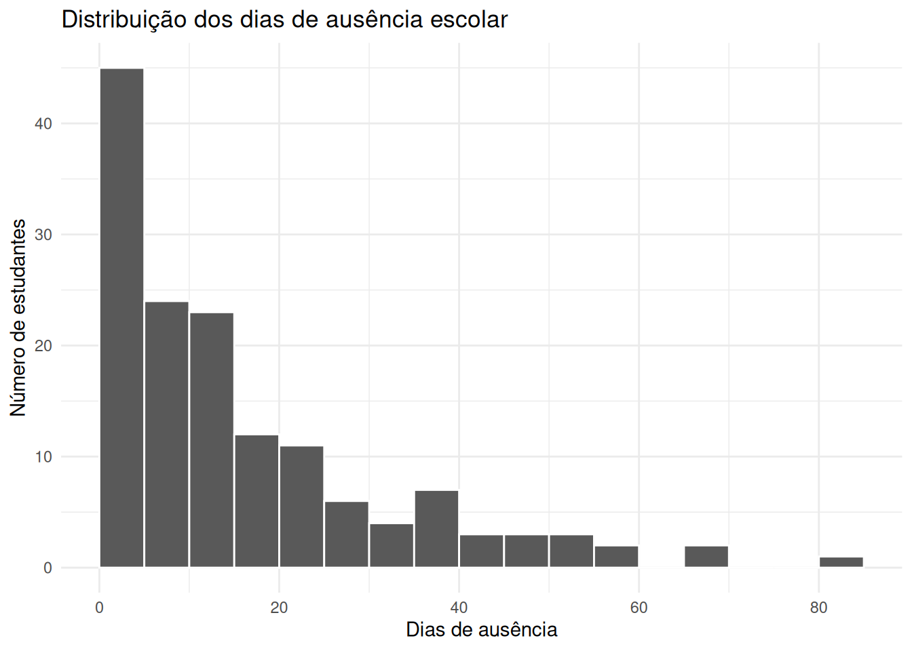
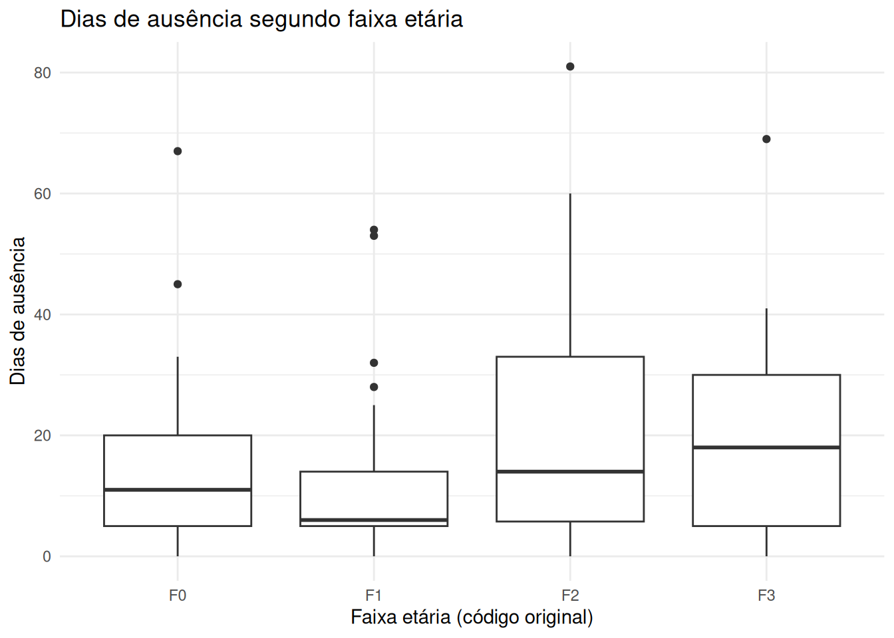
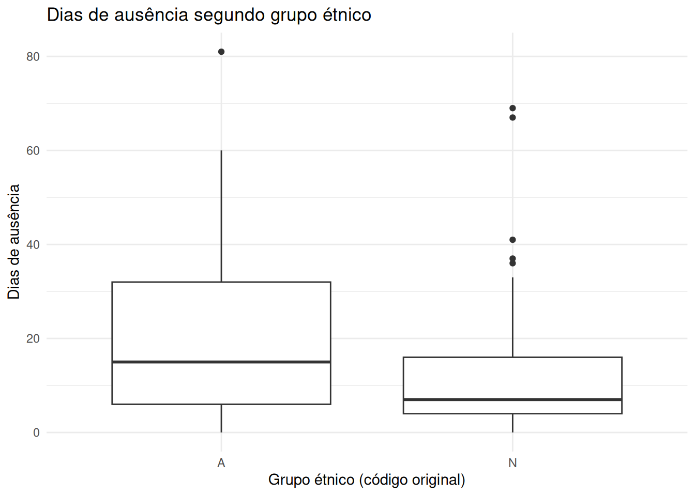
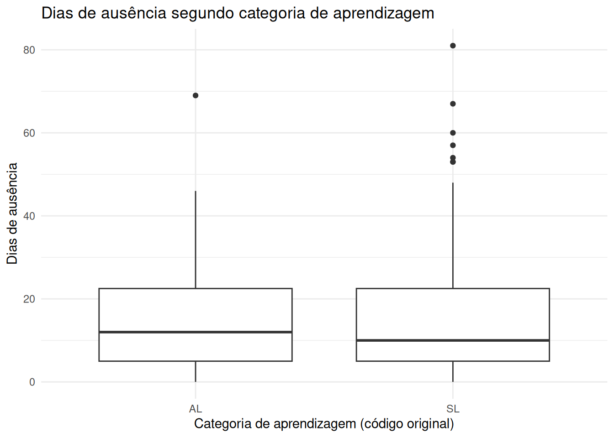
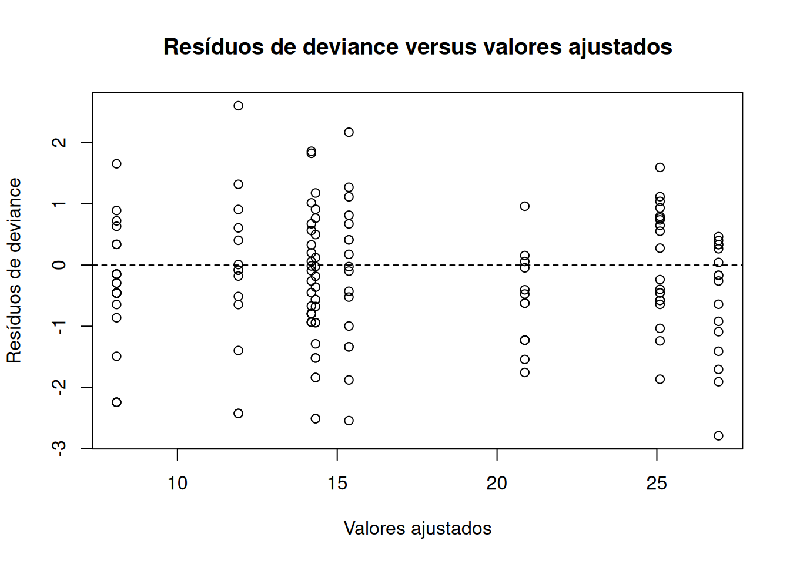
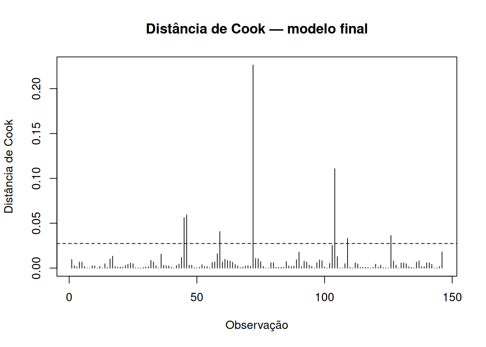

Este é um modelo simples de relatório técnico de modelagem de dados de contagem usando como exemplo o número de faltas escolares em uma zona rural de Nova Gales do Sul, Austrália. Aqui foi investigado o número de dias de ausência escolar (Days) e sua associação com características dos estudantes. O objetivo é comparar modelos lineares generalizados (MLGs) com distribuição de Poisson e binomial negativa, utilizando diferentes funções de ligação, e avaliar a adequação dos ajustes por critérios de informação e diagnóstico dos resíduos.
A análise é observacional. Portanto, as associações estimadas não devem ser interpretadas automaticamente como relações causais.
Dados e variáveis
Os dados são provenientes do conjunto quine, disponibilizado no pacote MASS do R. A base contém 146 observações e cinco variáveis:
Days: número de dias de ausência;
Eth: grupo étnico conforme codificado na base;
Sex: sexo;
Age: faixa etária codificada; e
Lrn: categoria de aprendizagem codificada.
As categorias são mantidas conforme os códigos originais do conjunto de dados.
Eth Sex Age Lrn Days
1 A M F0 SL 2
2 A M F0 SL 11
3 A M F0 SL 14
4 A M F0 AL 5
5 A M F0 AL 5
6 A M F0 AL 13
summary(dados)
Eth Sex Age Lrn Days
A:69 F:80 F0:27 AL:83 Min. : 0.00
N:77 M:66 F1:46 SL:63 1st Qu.: 5.00
F2:40 Median :11.00
F3:33 Mean :16.46
3rd Qu.:22.75
Max. :81.00
A variável resposta é Days e as demais são as variáveis explicativas, todas categóricas. Como o interesse é explicar diferenças na média dos dias de ausência, ajustamos os modelos com a mesma fórmula e as mesmas observações.
Análise exploratória
Estatísticas descritivas
resumo_days <- dados |>summarise(n =n(),media =mean(Days),desvio_padrao =sd(Days),variancia =var(Days),mediana =median(Days),minimo =min(Days),maximo =max(Days),Q1 =quantile(Days, 0.25),Q3 =quantile(Days, 0.75) )knitr::kable( resumo_days,digits =2,caption ="Estatísticas descritivas dos dias de ausência escolar.")
Estatísticas descritivas dos dias de ausência escolar.
n
media
desvio_padrao
variancia
mediana
minimo
maximo
Q1
Q3
146
16.46
16.25
264.17
11
0
81
5
22.75
A média observada é de aproximadamente 16,46 faltas, enquanto a variância é de aproximadamente 264,17. Como a varãncia é muito maior que a média, um modelo Poisson provavelmente terá ajuste inferior a um modelo binomial negativo para esses dados, embora a comparação final também dependa dos diagnósticos e do ajuste global.
Distribuição da resposta
ggplot(dados, aes(x = Days)) +geom_histogram(binwidth =5,boundary =0,color ="white" ) +labs(title ="Distribuição dos dias de ausência escolar",x ="Dias de ausência",y ="Número de estudantes" ) +theme_minimal()

O histograma do número de faltas apresenta uma distribuição assimétrica à direita, com maior concentração de estudantes com númoer de faltas relativamente baixo e uma cauda que se estende até 81 dias.
Distribuição por covariável
Os boxplots abaixo sugerem diferenças nas distribuições de dias de ausência entre as categorias das variáveis explicativas. Merece destaque a diferença visual entre o númeor de faltas entre os grupos étnicos A e N, enquanto as diferenças entre as categorias de aprendizagem parecem menos pronunciadas. Essas comparações são exploratórias e não consideram simultaneamente as demais variáveis.
ggplot(dados, aes(x = Age, y = Days)) +geom_boxplot() +labs(title ="Dias de ausência segundo faixa etária",x ="Faixa etária (código original)",y ="Dias de ausência" ) +theme_minimal()

ggplot(dados, aes(x = Eth, y = Days)) +geom_boxplot() +labs(title ="Dias de ausência segundo grupo étnico",x ="Grupo étnico (código original)",y ="Dias de ausência" ) +theme_minimal()

ggplot(dados, aes(x = Sex, y = Days)) +geom_boxplot() +labs(title ="Dias de ausência segundo sexo",x ="Sexo (código original)",y ="Dias de ausência" ) +theme_minimal()
ggplot(dados, aes(x = Lrn, y = Days)) +geom_boxplot() +labs(title ="Dias de ausência segundo categoria de aprendizagem",x ="Categoria de aprendizagem (código original)",y ="Dias de ausência" ) +theme_minimal()

Os boxplots permitem comparar as distribuições observadas entre as categorias. Essas comparações são exploratórias: diferenças visuais não controlam simultaneamente as demais covariáveis e não substituem a análise multivariada.
Metodologia estatística
Seja \(Y_i\) o número de dias de ausência do estudante \(i\), e seja \(\boldsymbol{x}_i\) o vetor de variáveis explicativas. Nos MLGs, a média condicional \(\mu_i = E(Y_i \mid \boldsymbol{x}_i)\) é relacionada ao preditor linear por uma função de ligação:
Foram consideradas as funções de ligação logarítmica e raiz quadrada. A ligação logarítmica garante médias positivas. A ligação raiz quadrada impõe uma relação diferente entre a média e o preditor linear e requer atenção à validade das médias ajustadas.
Modelo binomial negativo
O modelo binomial negativo permite que a variância exceda a média. Na parametrização usual utilizada por MASS::glm.nb,
em que \(\theta > 0\) é o parâmetro de dispersão. Valores menores de \(\theta\) correspondem a maior dispersão adicional em relação ao Poisson. Também foram comparadas as ligações logarítmica e raiz quadrada.
Especificação dos modelos completos
Inicialmente, todos os modelos foram ajustados com a fórmula Days ~ Eth + Sex + Age + Lrn. Essa especificação permite comparar as distribuições e funções de ligação mantendo constantes a resposta, as covariáveis e a amostra utilizada.
modelo_pois_log <-glm( Days ~ Eth + Sex + Age + Lrn,family =poisson(link ="log"),data = dados)modelo_pois_sqrt <-glm( Days ~ Eth + Sex + Age + Lrn,family =poisson(link ="sqrt"),data = dados)modelo_bn_log <- MASS::glm.nb( Days ~ Eth + Sex + Age + Lrn,data = dados,link ="log")modelo_bn_sqrt <- MASS::glm.nb( Days ~ Eth + Sex + Age + Lrn,data = dados,link ="sqrt")
Resultados
Comparação inicial das distribuições e ligações
Com base no procedimento de seleção de variáveis por testes de razão de verossimilhanças, o modelo final adotado foi o Binomial Negativo reduzido com função de ligação logarítmica. O modelo desconsiderou as variáveis Sex e Lrn devido à ausência de ganho estatisticamente significativo de ajuste.
Os modelos ajustados pela distribuição de Poisson apresentaram elevado AIC (\(2.299,18\) na ligação log e \(2.312,44\) na raiz quadrada) e deviance residual de \(1.696,71\) para \(139\) graus de liberdade. A razão \(\text{Deviance}/\text{GL} \approx 12,21\) confirma a presença de severa sobredispersão, invalidando a suposição de equidispersão da Poisson (\(\text{Var}(Y) = \mu\)).
A introdução do parâmetro de dispersão \(\theta\) nos modelos Binomiais Negativos reduziu drasticamente o AIC para \(1.109,15\) (ligação log) e \(1.109,43\) (raiz quadrada), além de estabilizar a razão \(\text{Deviance}/\text{GL}\) em \(1,208\).
Diante da equivalência prática em termos de AIC (\(\Delta\text{AIC} = 0,282\)), a ligação logarítmica foi selecionada por garantir que médias ajustadas fossem sempre positivas e por permitir a interpretação direta dos coeficientes exponenciados como Razões de Médias Condicionais (IRR).
Seleção de variáveis no modelo binomial negativo completo
A seleção de covariáveis foi conduzida sobre o modelo Binomial Negativo completo com ligação log por meio de testes de exclusão individual (função drop1()) baseados no Teste da Razão de Verossimilhanças (LRT).
selecao_drop1 <-drop1(modelo_bn_log, test ="Chisq")selecao_drop1
Single term deletions
Model:
Days ~ Eth + Sex + Age + Lrn
Df Deviance AIC LRT Pr(>Chi)
<none> 167.95 1107.2
Eth 1 181.01 1118.2 13.059 0.0003019 ***
Sex 1 168.20 1105.4 0.250 0.6170467
Age 3 179.93 1113.1 11.979 0.0074547 **
Lrn 1 170.48 1107.7 2.525 0.1120563
---
Signif. codes: 0 '***' 0.001 '**' 0.01 '*' 0.05 '.' 0.1 ' ' 1
As variáveis Sex (\(\text{LRT} = 0,25\); \(p = 0,6170\)) e Lrn (\(\text{LRT} = 2,53\); \(p = 0,1121\)) não apresentaram contribuição estatisticamente significativa para a explicação da variabilidade das fasltas dos alunos. Por esse motivo, foram removidas do modelo.
modelo_bn_log2 <- MASS::glm.nb( Days ~ Eth + Age,data = dados,link ="log")drop1(modelo_bn_log2)
Single term deletions
Model:
Days ~ Eth + Age
Df Deviance AIC
<none> 167.84 1105.8
Eth 1 180.34 1116.3
Age 3 179.06 1111.0
Comparação entre o modelo completo e o reduzido
Para testar formalmente a exclusão conjunta de Sex e Lrn, aplicou-se o Teste da Razão de Verossimilhanças entre os modelos aninhados. Como o \(p\)-valor \(> 0{,}05\), não há evidência estatística de que a exclusão de Sex e Lrn afeta significativamente a qualidade do ajuste. Portanto, o modelo reduzido foi escolhido.
Likelihood ratio test
Model 1: Days ~ Eth + Age
Model 2: Days ~ Eth + Sex + Age + Lrn
#Df LogLik Df Chisq Pr(>Chisq)
1 6 -547.90
2 8 -546.58 2 2.6502 0.2658
tabela_coef_final <-data.frame(Termo =rownames(resumo_final),Estimativa = resumo_final[, "Estimate"],Erro_padrao = resumo_final[, "Std. Error"],Estatistica_z = resumo_final[, "z value"],Valor_p = resumo_final[, "Pr(>|z|)"],Razao_de_medias =exp(coef(modelo_bn_log2)),IC95_inferior =exp(ic_final[, 1]),IC95_superior =exp(ic_final[, 2]),row.names =NULL)knitr::kable( tabela_coef_final,digits =3,caption ="Coeficientes, razões de médias e intervalos de confiança do modelo final.")
Coeficientes, razões de médias e intervalos de confiança do modelo final.
Termo
Estimativa
Erro_padrao
Estatistica_z
Valor_p
Razao_de_medias
IC95_inferior
IC95_superior
(Intercept)
3.038
0.196
15.529
0.000
20.868
14.086
31.912
EthN
-0.561
0.155
-3.628
0.000
0.571
0.418
0.779
AgeF1
-0.386
0.227
-1.695
0.090
0.680
0.430
1.060
AgeF2
0.185
0.231
0.798
0.425
1.203
0.752
1.903
AgeF3
0.255
0.241
1.060
0.289
1.290
0.800
2.068
O intercepto representa a média condicional estimada para o conjunto de categorias de referência de Eth e Age. Sua estimativa (\(\hat{\beta}_0 = 3,038\); \(p < 0,001\)) indica que a média esperada de faltas para a categoria de referência (estudantes aborígenes na faixa etária F0) é de \(\exp(3,038) = 20,87\) dias.
Para Eth, a razão de médias compara a categoria N com a categoria A. Aqui, mantida a faixa etária constante, a razão de médias é \(0,571\) (\(\text{IC}_{95\%}: [0,418; 0,779]\); \(p < 0,001\)). Isso indica que estudantes não aborígenes (N) apresentam uma redução esperada de \(42,9\%\) no número de faltas em relação aos estudantes aborígenes (A).
Considerando a faixa etária, F1 apresenta redução de \(32,0\%\) nas faltas esperadas em relação ao F0 (\(\text{Razão de Médias} = 0,680\); \(\text{IC}_{95\%}: [0,430; 1,060]\); \(p = 0,090\)). Por outro lado, a faixa etária F2 apresenta aumento de \(20,3\%\) nas faltas esperadas (\(\text{Razão de Médias} = 1,203\); \(\text{IC}_{95\%}: [0,752; 1,903]\); \(p = 0,425\)). Para a faixa etária F3, há um aumento de \(29,0\%\) nas faltas esperadas (\(\text{Razão de Médias} = 1,290\); \(\text{IC}_{95\%}: [0,800; 2,068]\); \(p = 0,289\)).
(Nota: Embora as comparações individuais de F1, F2 e F3 em relação ao F0 não sejam estatisticamente significativas a \(5\%\), a variável Age como um todo é altamente significativa para o modelo, conforme o teste LRT global, \(p = 0,0075\)).
modelo_bn_log2$theta
[1] 1.249143
Médias ajustadas
A análise visual do gráfico Dias Observados vs. Previstos mostra que os valores ajustados pelo modelo acompanham a tendência central dos dados. A dispersão observada ao redor da linha de concordância é consistente com a estrutura de variabilidade prevista pela distribuição Binomial Negativa (\(\text{Var}(Y) = \mu + \mu^2 / 1,249\)).
O gráfico de envelope simulado confirma que \(94,52\%\) dos resíduos estão contidos dentro das bandas de confiança de \(95\%\) (com apenas \(8\) observações fora do envelope, equivalente a \(5,48\%\)). Essa pequena taxa de extravasamento é plenamente aceitável sob simulação aleatória, indicando que a distribuição Binomial Negativa especificou adequadamente a estrutura de probabilidade dos dados.
Resíduos de Pearson versus valores ajustados
plot(fitted(modelo_bn_log2),residuals(modelo_bn_log2, type ="pearson"),xlab ="Valores ajustados",ylab ="Resíduos de Pearson",main ="Resíduos de Pearson versus valores ajustados")abline(h =0, lty =2)
Os gráficos de dispersão dos resíduos de Pearson contra as médias ajustadas não exibem padrões heterocedásticos ou tendências não lineares. Os resíduos encontram-se simetricamente distribuídos em torno de zero em todas as faixas de valores previstos (\(8\) a \(27\) dias). A amplitude da maioria dos resíduos situa-se dentro do intervalo \([-2, +2]\), sem presença de viés sistemático de sub-ajuste ou super-ajuste.
Resíduos de deviance versus valores ajustados
plot(fitted(modelo_bn_log2),residuals(modelo_bn_log2, type ="deviance"),xlab ="Valores ajustados",ylab ="Resíduos de deviance",main ="Resíduos de deviance versus valores ajustados")abline(h =0, lty =2)

A interpretação aqui é similar a dos resíduos de Pearson.
Análise de Pontos Influentes (Distância de Cook)
cook <-cooks.distance(modelo_bn_log2)plot( cook,type ="h",xlab ="Observação",ylab ="Distância de Cook",main ="Distância de Cook — modelo final")abline(h =4/nobs(modelo_bn_log2), lty =2)

which(cook >4/nobs(modelo_bn_log2))
45 46 59 72 104 109 126
45 46 59 72 104 109 126
A avaliação de pontos influentes identificou que a vasta maioria das observações apresenta Distância de Cook próxima de zero.
Apenas a observação nº 72 destaca-se isoladamente com valor \(\approx 0,22\), seguida moderadamente pelas observações 45, 46, 59, 104, 109 e 126 que ultrapassam marginalmente o limite exploratório de \(4/n = 0,0274\).
dados[c(72,45, 46, 59, 104, 109, 126),]
Eth Sex Age Lrn Days media_ajustada_bn
72 N M F0 SL 67 11.907111
45 A F F1 SL 53 14.192174
46 A F F1 SL 54 14.192174
59 A F F2 SL 81 25.099082
104 N M F3 AL 69 15.365677
109 N F F0 AL 33 11.907111
126 N F F1 AL 28 8.097887
A inspeção detalhada dos registros que ultrapassaram o limite da Distância de Cook (\(4/n = 0,0274\)) revela que o elevado impacto dessas observações decorre da presença de contagens atípicas de ausência escolar. O caso mais proeminente é o da observação 59 (com \(81\) faltas observadas frente a \(26,44\) previstas), que corresponde ao máximo de todo o conjunto de dados. Da mesma forma, os alunos 45, 46, 72 e 104 apresentaram faltas acentuadamente acima da tendência central do grupo (com \(53\), \(54\), \(67\) e \(69\) dias, respectivamente). Apesar do impacto visual na Distância de Cook, esses pontos refletem observações reais e válidas da cauda longa da distribuição das faltas.
Por estarem significativamente abaixo do limiar crítico de influência severa (\(\text{Distância de Cook} < 0,5\)), conclui-se que nenhum ponto individual distorce isoladamente a estimativa dos parâmetros. O modelo final é robusto e está estatisticamente validado.
Conclusão
Após a comparação das distribuições e funções de ligação e a avaliação da contribuição das variáveis explicativas, foi considerado o modelo binomial negativo com ligação logarítmica e preditores Eth e Age.